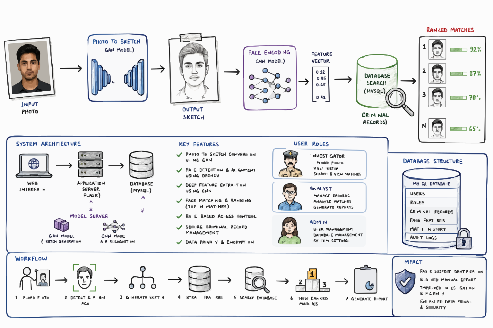

FaceTrace — Forensic Face Sketch Construction & Recognition
Feb – Jul 2026M.Tech mini project · Guide: Prof. Dr. O. B. V. Ramanaiah
- Web platform for facial sketch generation and automated suspect recognition, combining computer vision with deep learning.
- Photo-to-sketch conversion and face matching via OpenCV, GAN-based models and CNN similarity matching.
- Role-based MySQL backend for criminal-record handling with data-privacy safeguards.
85%Rank-10 matching accuracy